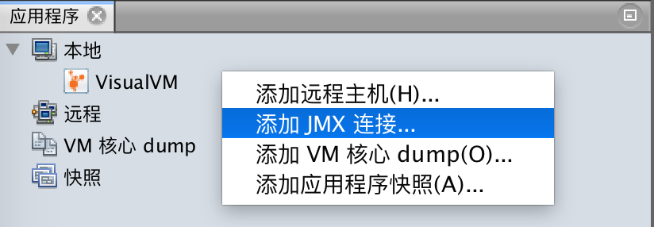
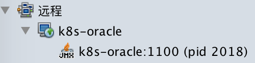

在前一篇文章里我们发现通过jstatd + VisualVm的方式，不能获得Java进程的CPU、线程、MBean信息，这时JMX就要登场了。
自Java 6开始，Java程序启动时都会在JVM内部启动一个JMX agent，JMX agent会启动一个MBean server组件，把MBeans（Java平台标准的MBean + 你自己创建的MBean）注册到它里面，然后暴露给JMX client管理。简单来说就是每个Java程序都可以通过JMX来被JMX client管理，而且这一切都是自动发生的。而VisualVm就是一个JMX Client。
VisualVm能够自动发现本机的Java进程，如果要监控远程主机上的Java进程则需要显式地配置JMX连接，下面讲配置方法：
第一步：与启动相关的System Properties
要给远程主机上的监控的Java进程在启动时必须带上几个JMX相关的System Properties（常用的几个）：
com.sun.management.jmxremote.port, 指定暴露的JMX端口。com.sun.management.jmxremote.rmi.port, 指定RMI connector端口，可以和com.sun.management.jmxremote.port保持一致。com.sun.management.jmxremote.ssl, 指定是否使用SSL，在开发环境下可以是false，但是在生产环境下强烈建议为true。com.sun.management.jmxremote.authenticate, 指定是否需要密码才能够创建JMX连接。
为了演示目的，我们用Tomcat来测试，不开启ssl和authenticate，把JMX端口设置为1100，执行下列命令启动Tomcat：
CATALINA_OPTS='-Dcom.sun.management.jmxremote -Dcom.sun.management.jmxremote.authenticate=false -Dcom.sun.management.jmxremote.ssl=false -Dcom.sun.management.jmxremote.port=1100 -Dcom.sun.management.jmxremote.rmi.port=1100 -Djava.rmi.server.hostname=k8s-oracle' bin/startup.sh注意上面有一个-Djava.rmi.server.hostname=k8s-oracle参数，JMX agent本质上也是一个RMI server，因此需要指定这个参数，否则就会像利用VisualVm远程监控Java进程里提到的一样，VisualVm无法连接到该Java进程。
PS. 使用SSL方式保护JMX连接的方法会另写文章说明。
第二步：创建JMX连接
在远程主机上右键，选择添加JMX连接（在下图里出现了之前启动的Tomcat进程）：

根据Java进程启动时设置的JMX System Properties配置JMX连接：
成功后你会发现多了一个进程，小图标上有JMX字样：

双击这个进程，你就能看到CPU、线程、还有MBeans了。
但是Visual GC没有内容
使用上面的步骤建立完JMX连接之后，你会发现Visual GC没有内容：
解决办法要启动jstatd。
按照利用VisualVm远程监控Java进程的方法先建立远程主机。
给这个远程主机添加JMX连接：
然后你会发现多了一个JMX图标的Java进程：
在这个进程里就能看到Visual GC了。